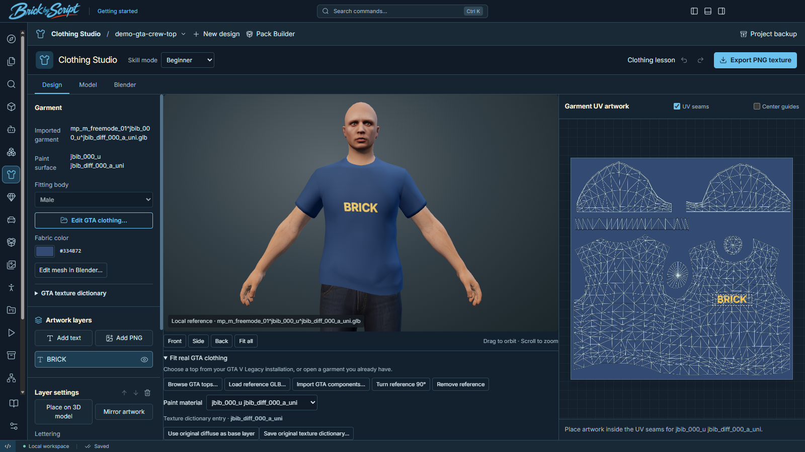

BRICK BY SCRIPT / DOCUMENTATION
Your ideas.
Your tools.
Your next step.
Learn the studios, build your first project and understand what it takes to bring your work into FiveM.

Inside Clothing Studio · App 0.16.6 alphaGet started
Your first project starts here.
Install on Windows
Choose the published download, install the app and find the included examples.
Your first project
Move a doorway in the example house, inspect it in 3D and reopen your saved work.
Save, back up and move projects
Organize your library, make independent copies, use recoverable Trash and take editable projects to another computer.
Recover work and use Undo
Choose between Undo, unsaved changes, named checkpoints and backups without confusing what each one keeps.
Find your studio
Pick the kind of work you want to create.
Start in Script Studio
Edit your first chat command, move into the editor and understand what validation checks.
Build your first interior
Draw two connected rooms, add furnishings and keep an editable house project.
Edit real GTA clothing
Choose the clothing category, load a permitted GTA or GLB source, reuse artwork and understand the steps to a native wearable.
Create jewelry and import chains
Work with chains and pendants, size watches or rings, fit bracelets, grills and earrings, and prepare supported sources for export.
Customize an imported vehicle
Bring a real GTA vehicle into the workshop, inspect its parts and prepare a native source before building a pack.
Understand rooms and portals
Connect an interior to the exterior and diagnose visibility problems without confusing portals with door holes.
From the editor to the game
Understand the tools and the checks between a design and a working resource.
From project to FiveM resource
Separate editable source, native assets, packaged resources and actual in-game testing.
Set up Blender and Sollumz
Check the external tools used for native assets and move between an editable source and the app's preview.
Test a resource in FiveM
Test the exact exported resource, record what happened and keep engine validation separate from an editor preview.
Keep the answers close
Get unstuck, learn the terminology and keep moving.
What’s new in 0.17.1
Project control, safer recovery and reusable creator edits, plus the expanded clothing and jewelry categories.
Troubleshoot your first problem
Find the failing stage, make a small correction and check the result without losing your project.
Creator glossary
Plain-language definitions for the terms you will encounter across the studios.
Welcome to Brick by Script
Find your starting point, understand the studios and make your first small change.
Stuck on something?
Start with troubleshooting, or search for the tool you’re using.